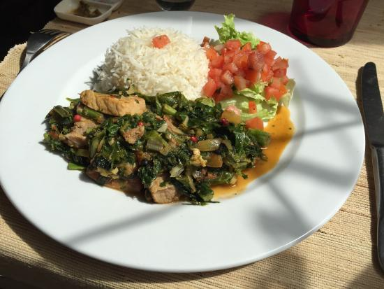
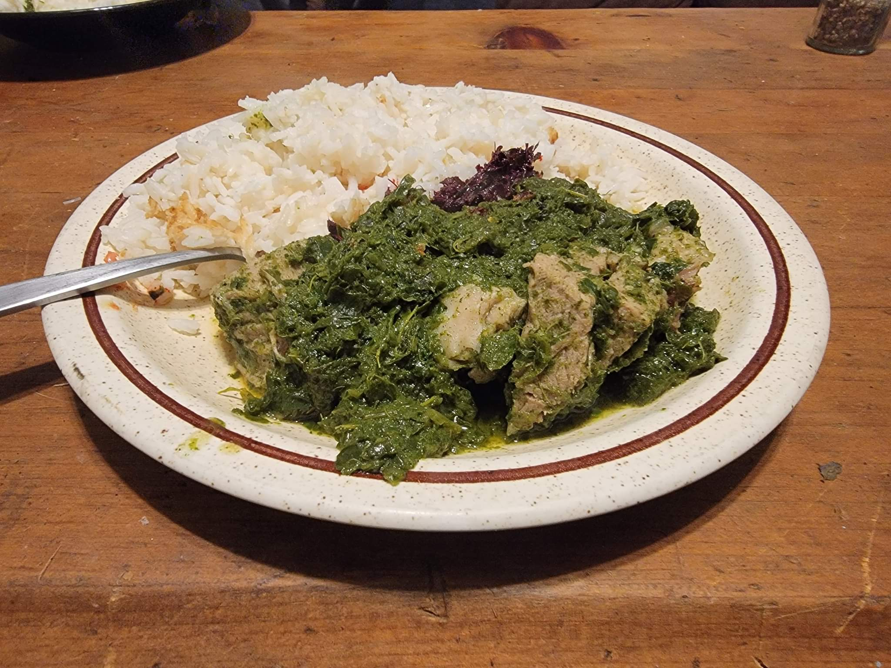
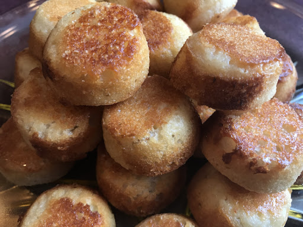

Romazava es el plato nacional de Madagascar, que consiste en verduras, carne de cebú, tomates y cebollas, normalmente acompañado de una porción de arroz.

Ravitoto se trata de hojas de yuca específicamente dulces machacadas con un mortero o una picadora de carne. Se cocina con ajo y carne de cerdo muy grasa.

Mofo Gasy se compone principalmente de harina de arroz y azúcar frita dentro de un molde específico. Mofo gasy también se puede hacer con leche de coco.

Madagascar es una enorme nación insular frente a la costa sureste de África. Alberga miles de especies animales, como lémures, que solo se encuentran en este lugar, junto con bosques tropicales, playas y arrecifes.